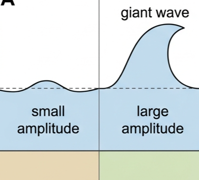
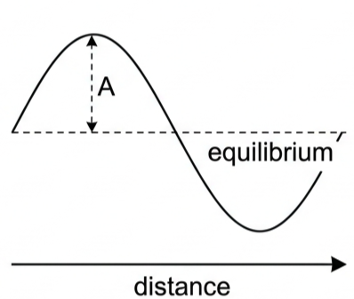
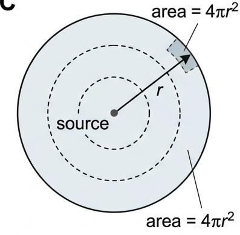
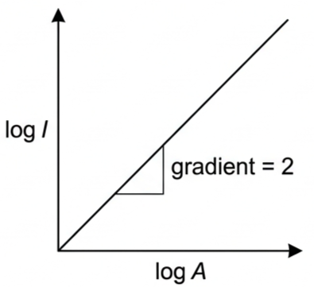
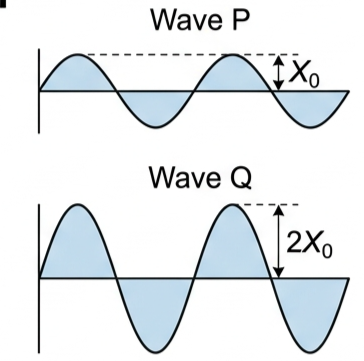
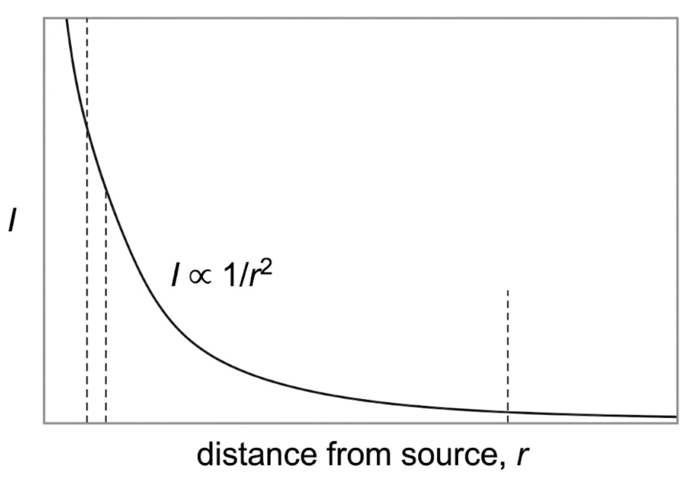

Why does turning the volume up a little sound so much louder? This lesson builds the intensity–amplitude relationship from energy concepts, the square law \(I \propto A^2\), how intensity falls off with distance from a point source, and the graph and calculation skills IB exams expect around both.
🌊 Hook – from ripple to tsunami
A tiny ripple on a pond carries almost no energy; a tsunami can flatten a coastline. A whisper is barely audible; a rock concert can shake your chest. The difference isn't just how high the wave is — its amplitude — it's how much energy the wave delivers per second, through every square metre it passes: its intensity.

Fig 1 — From a tiny ripple to a towering wave: a small increase in amplitude means a far larger increase in energy carried.
💡 Diagnostic question (think – then read on) — if a wave's amplitude is tripled, does the energy it carries also triple? No — because intensity depends on the square of amplitude, tripling amplitude multiplies the energy delivered by 3² = 9, not 3.
📏 Amplitude — a quick recap
Amplitude (\(A\)) is the maximum displacement of a particle from its equilibrium position. For a sound wave this can be measured as a pressure variation; for an electromagnetic wave it's the maximum electric field strength.

Fig 2 — A sinusoidal wave: amplitude \(A\) is the distance from the equilibrium (rest) line to a crest or a trough.
⚡ What is intensity?
Intensity (\(I\)) is the power transmitted per unit area, measured in watts per square metre (\(\text{W m}^{-2}\)).
$$I = \dfrac{P}{A}$$
Picture a light bulb radiating energy equally in all directions. The same total power spreads over an ever-larger spherical surface the further you get from it — which is why a distant star looks faint: not because it emits little power, but because that power is spread thinly by the time it reaches Earth.

Fig 3 — For a point source, power \(P\) spreads over a sphere of area \(4\pi r^2\), so intensity falls off as the wave travels outward.
Point source, distance r$$I = \dfrac{P}{4\pi r^2}$$
🔢 Energy in a wave and the \(I \propto A^2\) law
The energy carried by a wave is proportional to the square of its amplitude. For a sinusoidal mechanical wave, intensity can be derived as:
$$I = 2\pi^2 \rho v f^2 A^2$$
where \(\rho\) is the density of the medium, \(v\) the wave speed and \(f\) the frequency. For a fixed medium and frequency, everything except \(A^2\) is constant, so:
$$I \propto A^2$$
💡 Examiner insight — you'll rarely need the full constant. Most IB questions expect the proportionality form, which works for any wave type (sound, water, light) when only amplitude changes: $$\dfrac{I_1}{I_2} = \left(\dfrac{A_1}{A_2}\right)^2$$
⚠️ Common mistake — "if intensity doubles, amplitude doubles." No: because of the square root, \(\sqrt{2} \approx 1.41\). Doubling \(I\) only multiplies amplitude by about 1.4.
✓ Exam tip — always write \(I_1/I_2 = (A_1/A_2)^2\) before substituting numbers. It shows the examiner you understand the proportionality, not just a memorised shortcut.
Fig 4 — \(I\) vs \(A\): a parabola through the origin, because \(I \propto A^2\).

Fig 5 — log \(I\) vs log \(A\): a straight line of gradient exactly 2, confirming the square relationship.
✍️ Worked example – comparing two waves
Wave P has amplitude \(X_0\); Wave Q has amplitude \(2X_0\). They travel in the same medium with identical frequency. Find the ratio of their intensities, \(I_Q / I_P\).
1
Identify: only amplitude differs between the two waves — medium and frequency are identical, so the constant \(2\pi^2 \rho v f^2\) cancels.
Answer: \(\dfrac{I_Q}{I_P} = \left(\dfrac{2X_0}{X_0}\right)^2 = 4\). Wave Q has four times the intensity of Wave P — doubling amplitude quadruples intensity.

Fig 6 — Wave P (top) and Wave Q (bottom): same frequency and medium, but Q's amplitude is double P's.
🌍 Real-world: why starlight looks so faint
A star can radiate immense total power, yet appear as a faint point of light. The power spreads over the surface of an ever-expanding sphere as it travels outward, so the intensity reaching any one small area — like a telescope mirror — falls as \(1/r^2\). By the time starlight crosses light-years of space, only a minuscule fraction of the original intensity remains.

Fig 7 — Intensity vs distance from a point source: the rapid fall-off follows \(1/r^2\).
✓ Examiner tip: this is why the same "brightness" formula applies equally to a light bulb, a loudspeaker, and a star — any source radiating power equally in all directions obeys the same inverse-square law.
🚀 HL extension – linking A and r
Because \(I \propto 1/r^2\) and separately \(I \propto A^2\), it follows that amplitude falls as \(1/r\) for a spherical wave from a point source: $$A \propto \dfrac{1}{r}$$
Challenge: derive this from energy conservation alone. Answer: the power passing through any spherical shell around the source must be the same, so \(4\pi r_1^2 I_1 = 4\pi r_2^2 I_2 \Rightarrow I \propto 1/r^2\). Combined with \(I \propto A^2\), this gives \(A \propto 1/r\).
⚠️ Trap corner – common mistakes
Misconception
Correct view
If intensity doubles, amplitude doubles too
Amplitude is proportional to \(\sqrt{I}\), not \(I\) — doubling intensity multiplies amplitude by \(\sqrt{2} \approx 1.41\)
A graph of intensity against amplitude is a straight line
Since \(I \propto A^2\), the \(I\)–\(A\) graph is a parabola. Only plotting \(I\) against \(A^2\) (or log \(I\) against log \(A\)) gives a straight line
If intensity drops to \(1/9\), amplitude also drops to \(1/9\)
Amplitude drops to \(\sqrt{1/9} = 1/3\), since \(A \propto \sqrt{I}\)
Intensity and power are the same quantity
Power is the total energy transfer rate; intensity is power per unit area (\(\text{W m}^{-2}\)) — the same power spread over a larger area gives a smaller intensity
⚠️ Most common slip: assuming a linear relationship between intensity and amplitude. Always check whether the question changes amplitude (use the square-law ratio) or distance from a point source (use the inverse-square law) — the two often get mixed up.
I = P / AI ∝ A²I₁/I₂ = (A₁/A₂)²point source: I = P / (4πr²)I ∝ 1/r² → A ∝ 1/rdouble A → quadruple Iunits: W m⁻²
Practice check — multiple choice
1. Which graph best represents the relationship between intensity \(I\) and amplitude \(A\) for a wave?
A Straight line through the origin
B Parabola curving upward from the origin
C Rectangular hyperbola (decreasing)
D Horizontal straight line
2. The amplitude of a sound wave is doubled while frequency and medium stay unchanged. By what factor does its intensity change?
A 2
B √2
C 4
D 8
3. For a point source emitting spherical waves, how does intensity \(I\) vary with distance \(r\) from the source?
A \(I \propto 1/r\)
B \(I \propto 1/r^2\)
C \(I \propto r\)
D \(I\) is constant
4. A wave's intensity is reduced to \(1/9\) of its original value. What happens to its amplitude?
A Reduces to 1/9
B Reduces to 1/3
C Reduces to 1/81
D Stays constant
Practice check — fill in the blanks
Complete the statements:
The intensity of a wave is proportional to the square of its . Mathematically, \(I \propto\) . The SI unit of intensity is the (W m⁻²). For a point source, intensity varies with distance as \(I \propto\) .
Exam‑style questions
Exam question · Calculate
Q1. A wave has an amplitude of 0.5 mm and an intensity of 2.0 W m⁻². Calculate its intensity when the amplitude is increased to 1.5 mm, assuming the frequency and medium remain the same. [2 marks]
Q2. Explain why a graph of intensity against amplitude is not a straight line. Use the relationship \(I \propto A^2\) in your answer. [2 marks]
✓ Because \(I \propto A^2\), the relationship is quadratic, so a graph of \(I\) vs \(A\) is a parabola, not a straight line. ✓ To get a straight line, plot \(I\) against \(A^2\) (or log \(I\) vs log \(A\)).
Exam question · Apply
Q3. A point source emits sound with a power of 50 W. Calculate the intensity at a distance of 2.0 m from the source. [2 marks]
Q4. Two identical loudspeakers, A and B, emit sound of the same frequency. A listener standing 2.0 m from speaker A measures intensity \(I_0\). Deduce the distance from speaker B at which the intensity would be \(I_0/4\), assuming both speakers radiate equally in all directions. [3 marks]
✓ \(I \propto 1/r^2\) for a point source. ✓ Intensity falling to \(1/4\) means \(r\) must double: \((r_2/r_1)^2 = I_1/I_2 = 4 \Rightarrow r_2 = 2r_1\). ✓ \(r_2 = 2 \times 2.0 = \) 4.0 m.